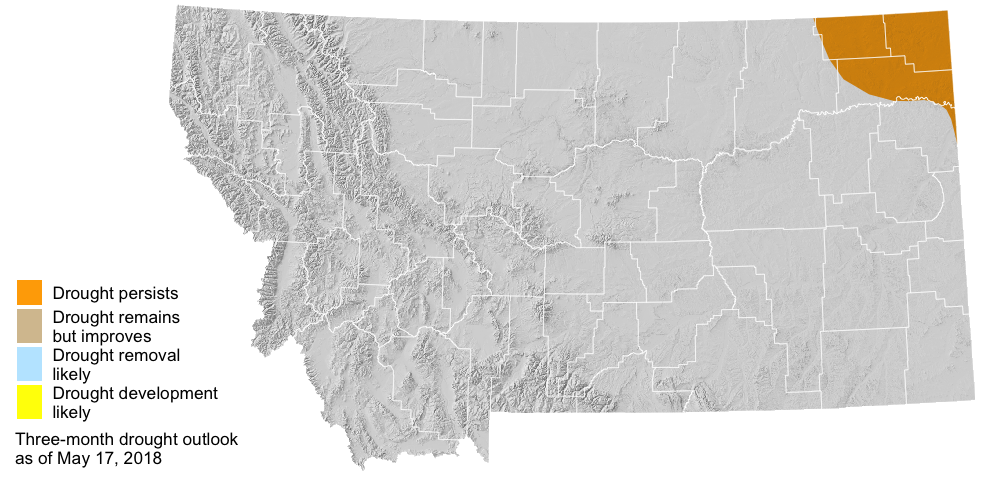

June–August 2018 Forecast
Photo: Kevin Hyde
 Temperature
Temperature
The summer outlook is for warmer than normal temperatures across western and central portions of the state. If the warmer temperatures occur as forecasted, they will contribute to increased evapotranspiration and the potential dry down of spring soil moisture reserves. The forecast is less certain in eastern portions of the state which means that there are equal chances of above, below, or normal summer temperatures.
 Precipitation
Precipitation
The summer outlook for precipitation is drier than normal across northwestern, southwestern, and north-central portions of the state. There may be potential for the development of drought conditions as the summer progresses in these regions if we do indeed experience drier than normal conditions in conjunction with above normal temperatures (see above). The forecast is less certain in eastern portions of the state which means that there are equal chances of above, below, or normal summer precipitation.

 Drought
Drought
The three month drought outlook suggests that drought will persist through August in Daniels, Sheridan, and Roosevelt counties. Due to late may rainfall these counties were recently downgraded to “abnormally dry.” Drought development is not predicted for the remainder of the state; however, drought development may still be possible given the uncertain seasonal forecast (above) for eastern portions of the state and warmer and drier than normal forecast for western portions of the state. For example, portions of Valley, Phillips, and Blaine counties have been designated as abnormally dry due to lack of rainfall in the past month and drying soil conditions.
